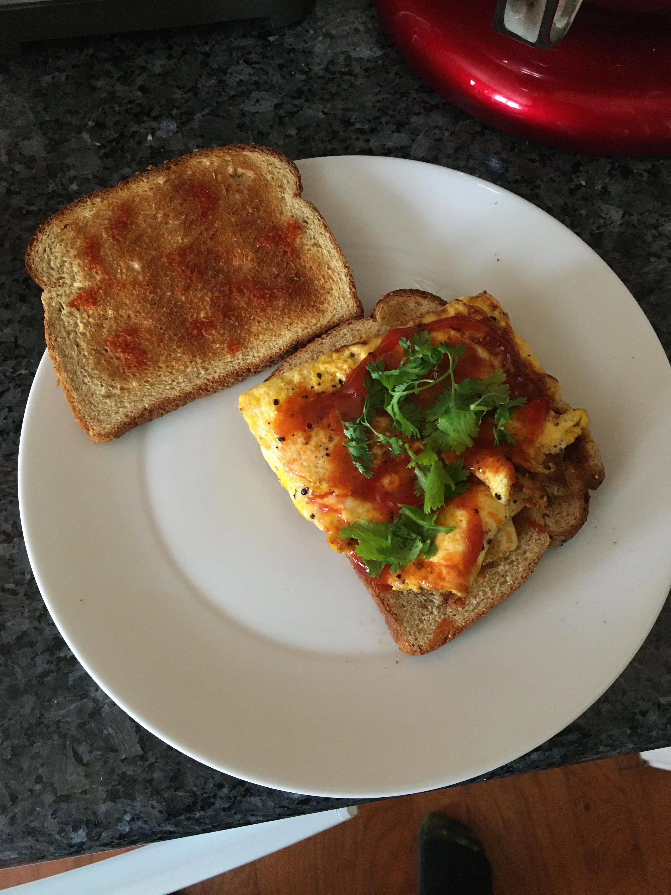

BMO's Special Sentient Sandwich Recipe

An easy-squeezy-lemon-peasy recipe to replicate BMO's yummy sandwich creation!
Get your breakfast going and your body full and ready to take on the rest of the day
with BMO's sandwich! Definitely a dish that wouldn't start moving on its own...
The Ingredients (a visit to the 'special market' might be needed to acquire some of these!)
- 1 Free-range Humpty Dumpty Egg.
- 1 Finely Aged Cheddar Man
- Homemade Ketchup (simply consists of a healthy tomato and sugar
- Fresh Pepper Fart (refer to the motion of hand in the GIF for maximum coverage!)
- Some Dancing Parsley (they won't mind surely)
- Face Bread, two slices
The Steps to Whipping One Up!
- Make the Bread:It's all up to you if you want to toast 'em bad boys or just slap them right on there!
- Get the heat going on a pan, add 1 Humpty Dumpty Egg, scrambled or sunny side up is your choice again; sky's the limit!
- Add a cheddar man in there for that yummy wowza factor!
- Make the Homemade Ketchup: Then using a fresh tomato and sugar combined together, then add some pepper fart and dancing parsley!
- Assemble the Sandwich:Lay your cooked Humpty Dumpty Egg between two Face Breads! Voila, a masterpiece!
A special BMO live demonstration!